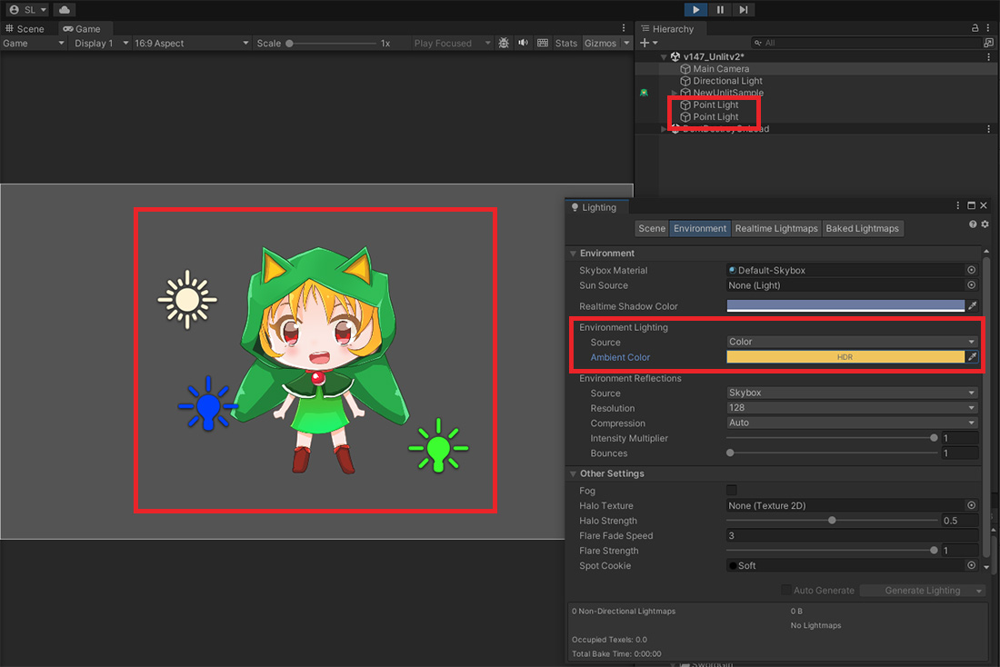
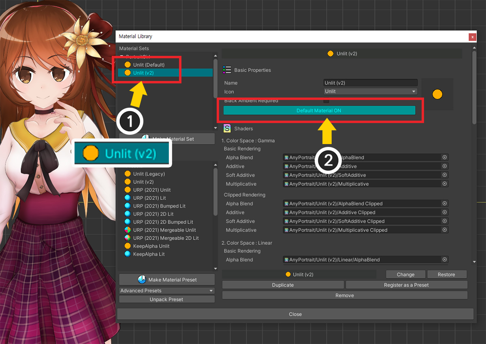

AnyPortrait > Manual > Changed Unlit material
Changed Unlit material
1.4.7
Unlit material (material that does not reflect light) provided by default in AnyPortrait is influenced by Ambient Color, despite its name.
However, this was different from the expected role of the material, and there were problems such as lighting errors occurring in Point Light.
So, starting from AnyPortrait v1.4.7, the newly created Unlit material is applied as the default.
However, for users who use existing materials, we did not modify the existing shader, but wrote it separately and added it.
This page covers the New Unlit Material and how to apply it.
Note
For the content covered on this page, it may be helpful to read the following manual.
- Material Library
- Lighting settings of the scene
New Unlit Material

After creating a character, let's place and set various light objects (Directional Light, Point Light, Ambient Color, etc.) in the Unity scene.
You can see that the new Unlit material ignores lights and renders the original colors of the texture image.

Let’s check what changes have occurred through the material library.
(1) Click the Material Library button to open the material library.
(2) You can see that the name of the material applied by default is "Unlit (v2)". (Previously “Unlit (Default)”)
(3) If you check the Material Preset list, you can see that two Unlit-related presets are registered, unlike the previous version.
- Unlit (Legacy) : This material was used as the default until previous versions. Name changed from "Unlit (Default)".
- Unlit (v2) : This is a new material added in AnyPortrait v1.4.7. Changed so that it is not affected by Ambient Color, etc.
This change will be applied by default to new characters after updating to AnyPortrait v1.4.7.
Apply new Unlit material to characters created in previous versions
Even if you update AnyPortrait, the material of existing characters will not change.
You can replace an existing character's materials with a new version of Unlit in the following way:

(1) Open the AnyPortrait editor and press the Material Library button.
(2) The material of characters created in previous versions will be registered as “Unlit (Default)”.
(3) Press the Make Material Set button to create a new material set.
(4) Select “Unlit (v2)”.
(5) Press the Select button.

(1) Added "Unlit (v2)" material set from presets. Select the added “Unlit (v2)”.
(2) Click the Default Material button to set it as the default material.

Run Bake and return to the Unity scene.

Unlit material with no lighting errors has now been applied.